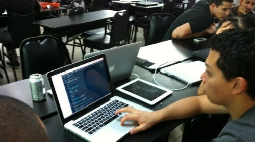
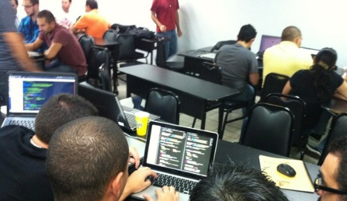

We did it! What?, we don't really know. But still we did it.
As part of Jungle Dynamics I co-founded the Javascript Community in Costa Rica and realized there was a lot of interest in NodeJS and Single Page Apps.
Members asked us for a workshop, something hands on; So we taught, while we do that... lets also practice some of the stuff we need to learn like building communities, teaching new technologies and building apps.
We got a group of 30 developers on a room and things are looking out of control; How where we supposed to get this group from this point to start working collaboratively on an app built with a technology they yet don't know?
I knew it was going to be almost impossible to teach 30 people how to build Single Page App in a day. We announced that we were going to build a real app an launch it next Monday.
While driving I came up with a solution, lets define 4 features and allow people to join a team and build the feature of their choice.
We have a solid framework OPF that includes Express,Twitter Bootstrap and Spine that simplifies the whole process, which is Jungle Dynamics main assets, it was going to be validated at HackDay and should be the best teacher
All, and I mean 100% of my code is Open Source; So people started looking into other projects of mine starting with Jungle Dynamics web site and the Social Bar
I was really amazed of how well things started working, it turns out that after you get people interested and committed to something that it's their choice everything else happens on its own; Almost as if it's instinct.
All teams were working collaboratively via Github, sending pull requests and such; They were being effective for the first time in coffee-script, SpineJS and Twitter Bootstraap, 3 important componentes of Jungle Dynamics App Framewerok
HackDay was one of the most difficult ideas I've ever had, and I did not realize it until I had 30 developers/designers and entrepreneurs right in front of me. This sort of "mistakes" where you push the bar is the kind of activity where you discover things, and boy did we made discoveries.